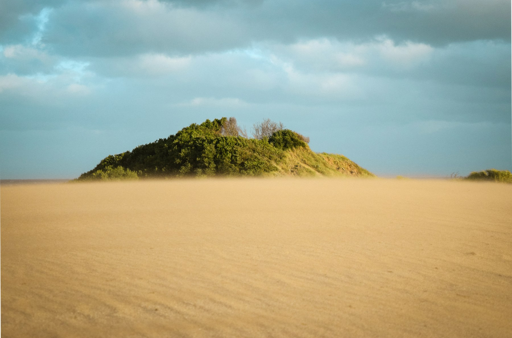

Disfrutar la playa
Pinamar cuenta con amplias playas para descansar, caminar junto al mar y disfrutar del aire libre.

Durante tu estadía en Hotel Malenia podés conocer distintos paisajes y actividades de Pinamar. La playa, los paseos al aire libre y la gastronomía local son parte de la experiencia.

Pinamar cuenta con amplias playas para descansar, caminar junto al mar y disfrutar del aire libre.
Conocé sus calles, comercios y espacios característicos durante un paseo por la ciudad.
El paisaje de dunas forma parte del entorno natural de la costa y ofrece una vista diferente de Pinamar.
Descubrí restaurantes y propuestas gastronómicas para completar tu visita.
Podés empezar el día con un paseo por la costa, recorrer la ciudad por la tarde y terminar con una cena tranquila. En Pinamar cada día se puede disfrutar a tu propio ritmo.
Nuestro equipo puede ayudarte con información para organizar tu visita. Escribinos si tenés alguna consulta.
Contactar al hotel